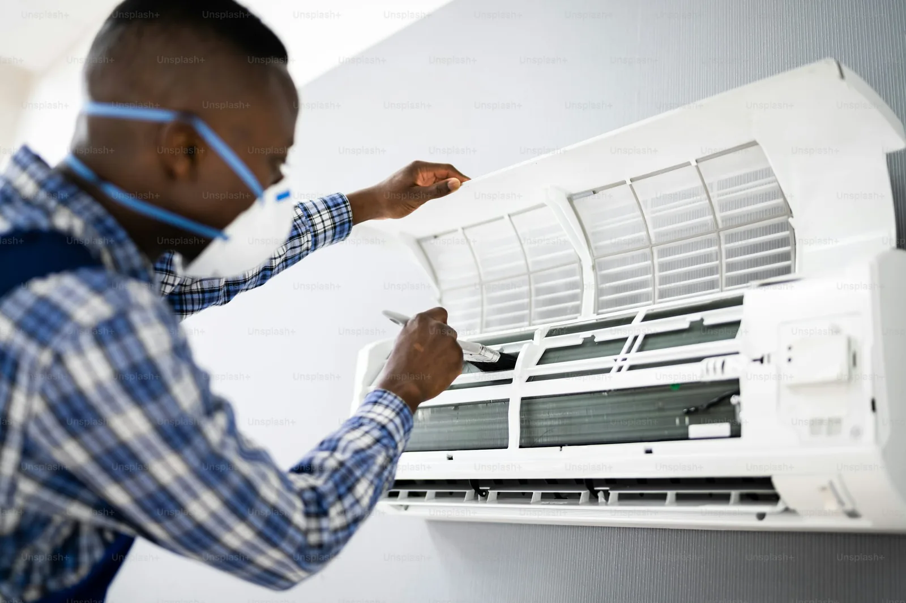

عندما يتغير أداء المكيف، قد تختلط العلامات: تبريد أضعف، توقف متقطع، ماء قرب الوحدة، أو صوت لم يكن ملحوظًا من قبل. بدل تجربة تعديلات متتابعة، دوّن ما تراه كما هو. سجل قصير ودقيق يساعد على شرح المشكلة للفني، ويمنع الخلط بين الملاحظة وبين تخمين سببها. هذا الدليل يركّز على إعداد ذلك السجل واتخاذ قرار آمن بشأن الخطوة التالية.
سجل الأعراض قبل طلب الفحص
اكتب المعلومات في ورقة أو ملاحظة على الهاتف، من دون فك أي جزء من الجهاز. اجعل الوصف محددًا وقابلًا للمقارنة:
- ما الذي تغير؟ صف ضعف الهواء أو التبريد، التوقف، التسرب، الصوت، أو رمز الخطأ الظاهر إن وجد.
- متى يظهر؟ سجّل وقت ملاحظة المشكلة، وهل بقيت طوال التشغيل أم حدثت على فترات.
- أي جهاز؟ دوّن نوع المكيف ورقم الطراز إن كان ملصق البيانات ظاهرًا ويمكن قراءته بأمان، وحدد الغرفة أو موقع الوحدة.
- ما الذي جُرّب؟ اذكر تغييرات الإعدادات أو تنظيف الفلتر وفق دليل الشركة، وما إذا طرأ بعدها فرق ملحوظ؛ لا تستنتج منها سبب العطل.
إذا كانت لديك عدة وحدات، اربط كل ملاحظة بالجهاز المقصود بدل وصف المشكلة على أنها عطل عام في المنزل. لا حاجة إلى قياس الكهرباء أو فتح الغطاء للحصول على هذه المعلومات.
فرز الملاحظة: متابعة أم توقف عن الاستخدام؟
تغيّر الأداء المستمر، تكرار فصل الجهاز، الماء حول الوحدة، الصوت غير المعتاد أو ظهور رمز خطأ أسباب وجيهة لطلب فحص. أما رائحة الاحتراق أو الشرر أو صوت كهربائي فتستدعي وقف الاستخدام وطلب مساعدة مؤهلة؛ لا تفتح الغطاء الكهربائي ولا تلمس المكثفات أو الأنابيب. عند الشك في سلامة الجهاز، لا تواصل التجربة المنزلية.
يمكن للمستخدم الاكتفاء بما تسمح به تعليمات الشركة: التأكد من وضع التشغيل ودرجة الضبط وبطاريات جهاز التحكم، أو فحص فلتر قابل للإزالة بعد إيقاف الجهاز بالطريقة المحددة في الدليل. إذا لم تكن الخطوة واضحة، اتركها للمختص. لا تتعامل مع وسيط التبريد ولا تنفذ قياسات كهربائية بنفسك.
جهّز إحاطة قصيرة للفني
عند التواصل، اجمع في رسالة واحدة نوع الجهاز وعدد الوحدات، وموقع العقار أو الحي، والعلامات المسجلة ووقت ظهورها. أضف صورة لملصق الطراز فقط إذا أمكن التقاطها دون تسلق أو لمس أجزاء خطرة، واذكر إن كان الوصول إلى الوحدة صعبًا. في القريات، تحقّق قبل الحجز من إتاحة الخدمة ونطاق التغطية والموعد؛ لا تفترض أن الخدمة متاحة لمجرد وجود صفحة عنها.
اطلب وصفًا لما سيفحصه الفني، ثم اسأله أن يشرح النتيجة والإجراء المقترح قبل الموافقة. ضعف التبريد وحده لا يثبت أن وسيط التبريد ناقص، وقد يتطلب تحديد السبب فحصًا مباشرًا وأدوات مناسبة لنوع الجهاز.
اتفق على حدود العمل قبل الإصلاح
قبل بدء العمل، وضّح ما إذا كان التقدير يشمل الفحص والعمالة والقطع والاختبار بعد الإصلاح، وما إذا كانت هناك رسوم أخرى. إذا اقتُرحت قطعة بديلة، اسأل عن اسمها وتوافقها مع طراز المكيف وتكلفتها، واستفسر عن أي ضمان متاح وشروطه. قارن بين عروض تتناول نطاقًا متشابهًا، ولا تعتمد على رقم أولي قبل معرفة ما يتضمنه.
تختلف إجراءات الصيانة بين مكيف الشباك والسبليت والمركزي والأنظمة متعددة الوحدات؛ لذلك اتبع دليل الطراز ولا تستخدم منظفات غير موصى بها. اترك أعمال الكهرباء ودائرة التبريد للفني المؤهل، ولا تفتح الوحدة الخارجية أو تقترب من المروحة.
أغلق سجل الصيانة بعد الزيارة
احتفظ بتاريخ الفحص، وملخص ما وجده الفني، والعمل والقطع التي نُفذت، والفاتورة أو التقرير. بعد ذلك راقب الجهاز في استعماله المعتاد وسجّل إن عادت العلامة نفسها أو ظهر تغير جديد. إذا تكررت المشكلة، شارك التسلسل الزمني وما تغير بعد الإصلاح بدل البدء بتفكيك الجهاز أو تعديل توصيلاته.
الخلاصة: ملاحظة موثقة، وسؤال واضح عن نطاق الفحص، والتوقف عند مؤشرات الخطر تجعل طلب الصيانة أكثر تنظيمًا من التخمين. حضّر هذه التفاصيل أولًا، ثم أكّد الإتاحة والموعد والتكلفة المتوقعة قبل الحجز في القريات.
هذا دليل توعوي عام ولا يؤكد توافر الخدمة أو تغطيتها في المدينة. اتبع تعليمات السلامة ودليل الشركة المصنّعة، واستفسر عن النطاق قبل الحجز.
اتصل الآن للاستفسار عن الخدمة
تأكد من توفر الخدمة ونطاقها في مدينتك قبل تحديد الموعد.
بطاقة مختصرة قبل الاتصال
اكتب: نوع المكيف، عدد الوحدات، موقع العقار، وصف العلامة ووقت ظهورها، وما جرى التحقق منه وفق الدليل.
أكّد قبل الحجز إتاحة الخدمة ونطاقها في القريات، ثم اتفق على موعد الفحص وما يشمله التقدير قبل بدء أي إصلاح.